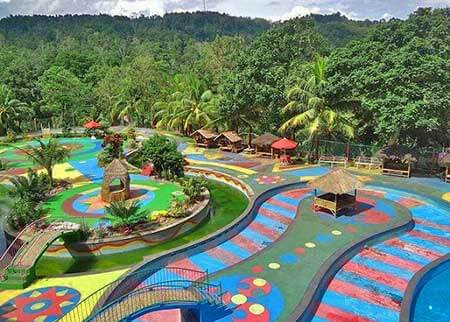

Welcome to Taman Bumi Kedaton
Jika Anda sedang penat dengan kegiatan dan rutinitas sehari-hari anda, Taman Wisata Bumi Kedaton adalah pilihan yang sangat tepat untuk menjadi pelepas lelah. terdapat banyak fasilitas yang dapat anda nikmati apalagi bersama keluarga tercinta. dengan berenang, melihat binatang- binatang, juga dapat menginap di Cottagenya, dll. sangatlah worth it!!
Video
Taman Bumi Kedaton
Taman Wisata Bumi Kedaton merupakan tempat wisata bernuansa pegunungan nan hijau, karena berdiri di lahan bekas area perkebunan durian. Objek wisata ini berdiri pada tahun 2004 dan digagas langsung oleh Gubernur Lampung saat itu, yaitu Sjachrudin Z.P. Berada pada ketinggian 700 – 900 meter di atas permukaan laut, Sjachrudin Z.P. mendirikan objek wisata ini degan maksud supaya ada hiburan alteratif bagi warga Lampung selain ke daerah pantai. Sejak berdirinya di tahun 2004, objek wisata ini telah menyedot perhatian banyak wisatawan, terutama wisatawan dari Kota Bandar Lampung. Tapi, tak sedikit juga wisatawan yang datang dari kota lain di Pulau Sumatera.
Untuk masuk ke taman wisata bumi kedaton kamu cukup mengeluarkan uang sebesar Rp. 8000 untuk dewasa dan Rp.7000 untuk anak-anak. Sedangkan jika ingin masuk wahana waterpark atau kolam renang kamu harus mengeluarkan uang Rp. 25.000/orang. Jika kamu ingin berkeliling di wisata ini menggunakan gajah maka bisa membayar Rp. 15.000. Untuk pertunjukan gajah harga tiketnya Rp.10.000. Terdapat :Biodata
Hasil Uts Pemrograman Web ,IF20B, Fakultas Teknik dan Ilmu Komputer, Informatika